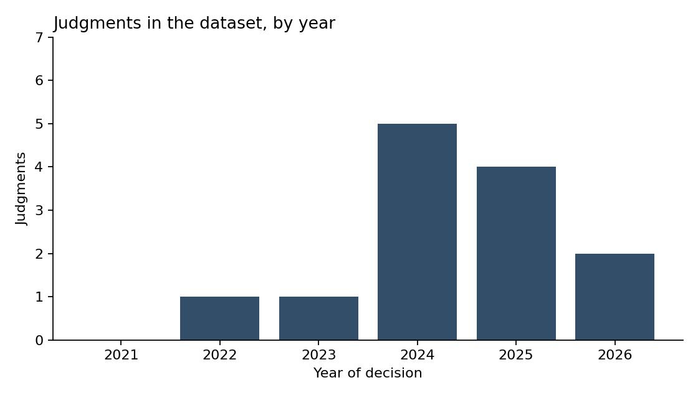
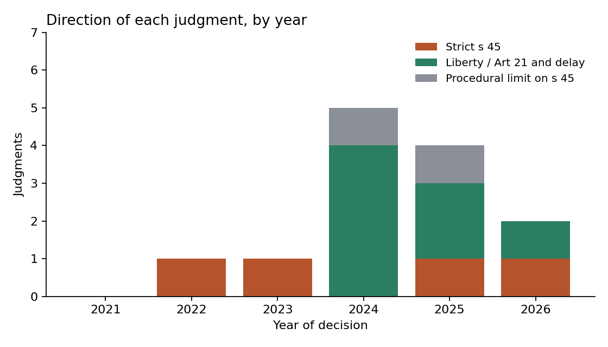
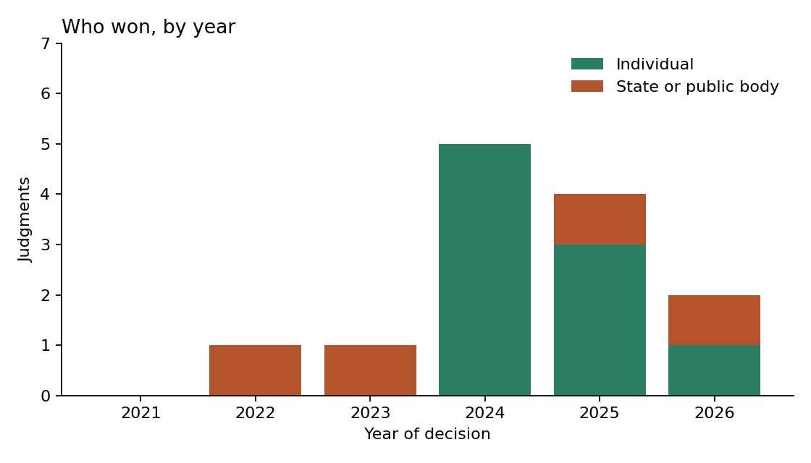

Bail in Money-Laundering (PMLA) Cases in the Supreme Court of India
Visualising doctrinal evolution, 2021 to 2026 · Judgment content analysis · Siddharth Shekhar
The question
Section 45 of the Prevention of Money Laundering Act, 2002 makes bail hard: the court must be satisfied that there are reasonable grounds to believe the accused is not guilty and will not offend on bail. In 2022 a three-judge bench upheld these twin conditions. This page asks how the Supreme Court has handled them since, using 13 judgments.
What the data shows

The set starts with Vijay Madanlal Choudhary (2022), which upheld s 45, and the 2023 refusal of bail to Manish Sisodia. Then comes a run of 2024 decisions in which bail was granted on grounds of long custody and delayed trial.

In 2022 and 2023 both judgments enforced s 45. In 2024 four of the five went the liberty way. From 2025 the picture is mixed: Kanhaiya Prasad (February 2025) and Aditya Tripathi (2026) insist on the twin conditions, while Udhaw Singh (2025) and Arvind Dham (2026) grant bail on delay.

The 13 judgments
| Date | Case | Citation | Direction | Issue |
|---|---|---|---|---|
| 27-07-2022 | Vijay Madanlal Choudhary v. Union of India | 2022 SCC OnLine SC 929 | Strict s 45 | Twin conditions upheld as a reasonable regime for a special law on money laundering; they apply whatever form the bail relief takes. |
| 30-10-2023 | Manish Sisodia v. Central Bureau of Investigation (Sisodia I) | Crl. A. No. 3351 of 2023 [VERIFY] | Strict s 45 | Bail refused at that stage, with liberty to apply again after about three months if the trial was slow. |
| 16-05-2024 | Tarsem Lal v. Directorate of Enforcement | 2024 INSC 434 | Procedural limit | No; such an accused is not in custody, so the ED cannot arrest him without the court's permission and ordinary bail law applies. |
| 09-08-2024 | Manish Sisodia v. Directorate of Enforcement (Sisodia II) | 2024 INSC 595 | Liberty / Art 21 | Bail granted; the right to speedy trial under Art 21 prevails when trial cannot realistically start soon. |
| 27-08-2024 | K. Kavitha v. Directorate of Enforcement | 2024 SCC OnLine SC 2269 | Liberty / Art 21 | Bail granted; the proviso for women and the Sisodia reasoning on custody and delay were applied. |
| 28-08-2024 | Prem Prakash v. Union of India | 2024 INSC 637 | Liberty / Art 21 | Bail granted; s 45 was read together with Art 21 and the principle that bail is the rule. [VERIFY] |
| 26-09-2024 | V. Senthil Balaji v. Deputy Director, Directorate of Enforcement | 2024 INSC 739 | Liberty / Art 21 | Bail granted; where the maximum sentence is seven years, prolonged pre-trial custody can outweigh the statutory restriction. |
| 16-01-2025 | Padam Chand Jain v. Directorate of Enforcement | SLP (Crl) no. [VERIFY] | Liberty / Art 21 | Bail granted; twin conditions cannot override Art 21, and Sisodia's bail was not an Art 142 order. |
| 21-01-2025 | Directorate of Enforcement v. Subhash Sharma | 2025 INSC 141 | Procedural limit | No; if the arrest violated Arts 21 and 22, the court must grant bail whether or not the twin conditions are met. |
| 13-02-2025 | Union of India v. Kanhaiya Prasad | 2025 INSC 210 (Crl. A. No. 728 of 2025) | Strict s 45 | No; the twin conditions are mandatory, so the bail order was set aside, remanded to another bench and the accused told to surrender. |
| 17-02-2025 | Udhaw Singh v. Directorate of Enforcement | 2025 INSC 247 | Liberty / Art 21 | Bail granted; constitutional courts may grant bail under PMLA when the trial will be unduly delayed; Kanhaiya Prasad distinguished. |
| 06-01-2026 | Arvind Dham v. Directorate of Enforcement | 2026 INSC 12 | Liberty / Art 21 | Bail granted; speedy trial under Art 21 is not eclipsed by the nature of the offence, and economic offences are not one class. |
| VERIFY (reported 07-08-2026) | Directorate of Enforcement v. Aditya Tripathi | ADD CITATION | Strict s 45 | High Court bail orders set aside and the bail pleas sent back for fresh decision under s 45. |
Limits
This is a small, hand-picked sample, not every PMLA bail ruling. Short orders were left out. The direction coding is a judgment call and the counts are too small to show a statistical trend. Several rows were drafted from secondary reports and still need checking against the official judgments; see the README.